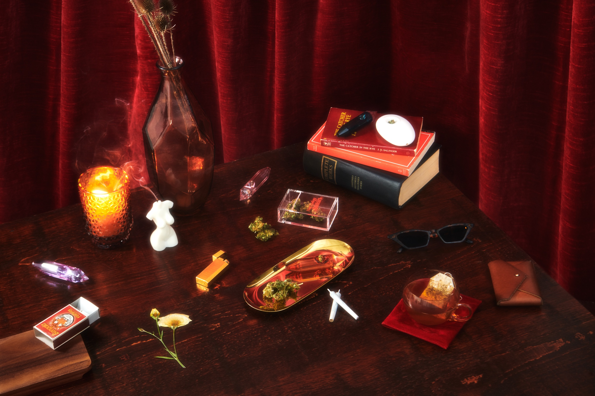
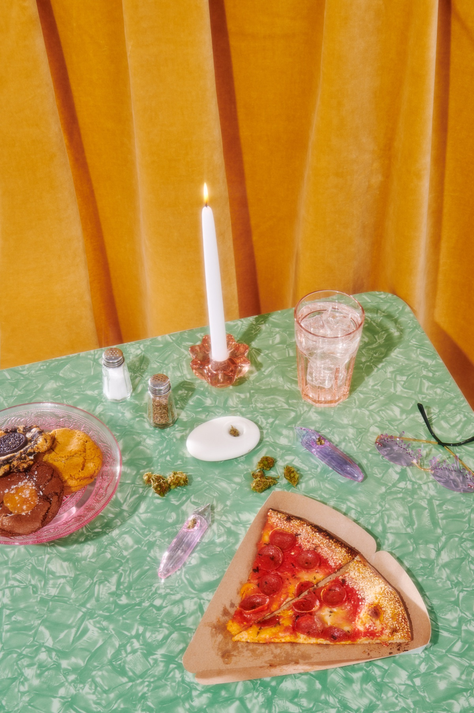
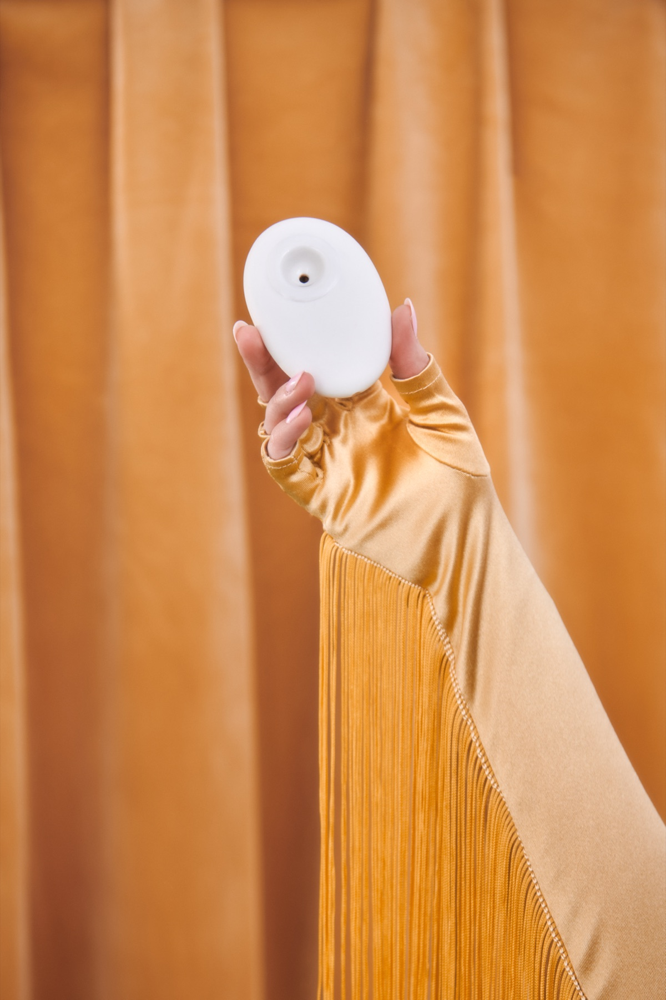
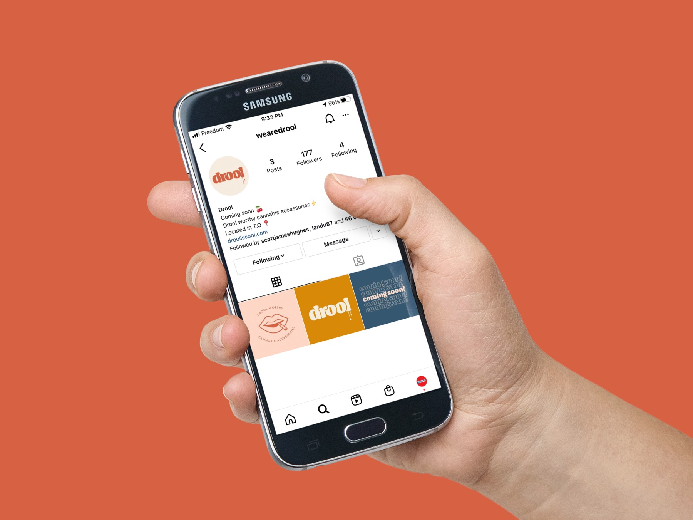
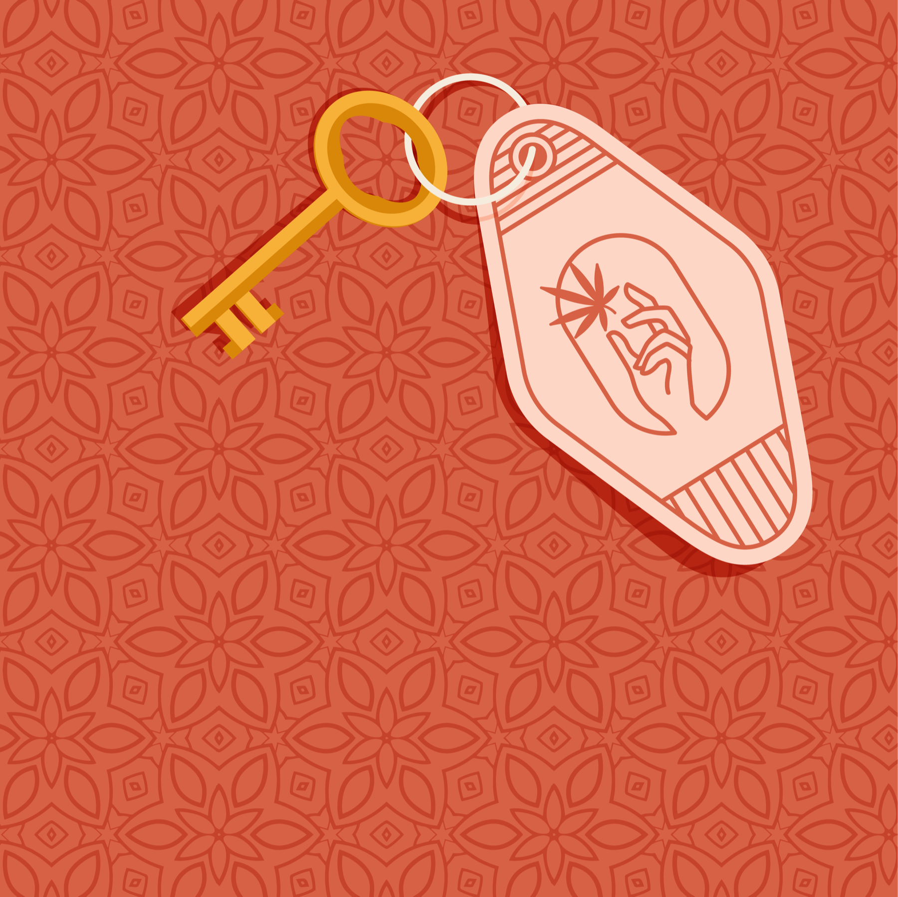

too good for the junk drawer.
Drool turned smoking accessories into colourful objects worth leaving on the table.

Smoking accessories were functional, forgettable and made to disappear.
Treat the category like home objects, not counter clutter.
Mission, identity, products, packaging, content and store.
An editorial world with an accessible point of entry.
the category looked like something to hide.
Most smoking accessories were either anonymous utilities or expensive design objects. There was room between them for something joyful, well-made and priced for everyday use.
We treated that gap as a complete brand brief, not a logo assignment: what should the products be, how should they feel in a room and what kind of world would make people want to invite them in?
A sea of the same visual shorthand, built to be sold behind glass and put away at home.
Design-led accessories with wit, colour and no luxury tax on having taste.
put the good stuff on the table.
product, picture, personality.
We designed the identity, product range and packaging together, then staged them in a tactile campaign world of food, fabric and saturated colour. Social, influencer, PR and unboxing all came from the same visual premise.




Mission, market position, naming logic and a reason for the brand to exist.
Product design, packaging and an unboxing experience made for display.
Photography, social, influencer, PR and the e-commerce world around it.
Concept, strategy, identity, product, packaging, photography direction and launch by Smaller Agency.
Drool is a Smaller Agency initiative.